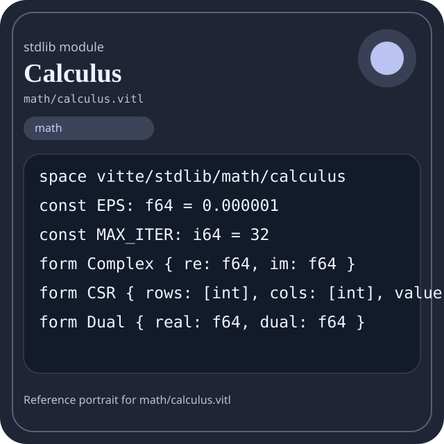

Stdlib module math/calculus.vitl
This page is a wiki-style reference for one concrete stdlib file. It explains what the file owns, where it fits in the family, and how to decide whether this is the right surface to depend on.

math/calculus.vitl.Family: math
Kind: public stdlib surface
Page style: this reference follows the same “encyclopedic card + portrait + usage contract” logic as the keyword pages, but for stdlib modules.
Summary
- Overview
- Purpose
- Taxonomy
- Implementation profile
- Top-level API inventory
- Position in family
- Declaration map
- Representative signatures
- How to use this module
- User example
- Keyword coverage
- Source shape
- Source landmarks
- Source organization
- Complete API catalog
- Integration boundaries
- Composition guidance
- Relationship table
- Neighbor modules
Overview
| Field | Value |
|---|---|
| Path | math/calculus.vitl |
| Family | math |
| Kind | public stdlib surface |
| Line count | 581 |
| Declared procedures | 56 |
| Declared forms/picks | 3 |
`math/calculus.vitl` is a public stdlib surface inside the `math` family. It should be read as one focused slice of the broader family responsibility: Arithmetic, algebra, comparison, calculus, geometry, modular arithmetic, number theory, probability, statistics, matrix, and vector helpers.
Purpose
This file should be chosen because of responsibility, not because its name “sounds close enough”. Inside the math family, it carries one focused part of the contract and keeps that responsibility separate from neighboring concerns.
- A scoring engine can compute aggregates in `math` while keeping I/O and transport elsewhere.
- A statistics or matrix chapter should explain the workflow around the computation, not just a single formula.
Taxonomy
Think of this page as a generated encyclopedia entry rather than a hand-written tutorial. The goal is to show what kind of module this is, how dense it is, and what reading strategy makes sense before depending on it.
- Large algorithm surface: this file exposes many procedures and likely acts as a domain toolkit rather than a single thin wrapper.
- Owns domain vocabulary: the module declares data shapes in addition to executable helpers, so its types are part of the contract.
- Has tuning constants: part of the module behavior is controlled by named constants that document default precision, limits, or policy.
- Minimal top-level dependencies: the module reads as mostly self-contained from its opening declarations.
- Explicit export surface: the file ends with visible export declarations instead of relying only on implicit namespace discovery.
Implementation profile
This profile is inferred directly from the source text. It does not replace reading the file, but it tells you quickly whether the module is mostly declarative, loop-heavy, branch-heavy, or organized around many small exits.
| Signal | Count | What it suggests |
|---|---|---|
if | 27 | Branching density and local decision-making. |
while | 22 | Loop-heavy or iterative implementation style. |
for | 0 | Collection-style traversal at source level. |
match | 0 | Variant-driven branching or grammar-style decoding. |
let | 167 | Local state and intermediate value density. |
give | 79 | Number of explicit exit points and result shaping. |
Top-level API inventory
| Surface | Items |
|---|---|
| Procedures | poly_eval, deriv_forward, deriv_backward, deriv_central, deriv2, gradient, integrate_trap, integrate_simpson, limit, deriv_coeffs, newton, bisection |
| Forms | Complex, CSR, Dual |
| Picks | none declared at top level |
| Constants | EPS, MAX_ITER |
| Exports | * |
Imported surfaces
This file does not advertise a top-level `use` surface in its opening declarations. That often means it is either self-contained or an aggregation layer.
Position in family
This file is module 5 of 21 in the math family when ordered by path. By procedure count it ranks 8, and by line count it ranks 10. Those ranks are useful as rough signals of breadth, not as quality judgments.
Declaration map
The declaration map turns raw source into a scan-friendly catalog. It is useful when the file is large enough that a reader wants to orient by kinds of surfaces first.
| Line | Name | Kind | Role |
|---|---|---|---|
| 1 | vitte/stdlib/math/calculus | space | Declares the namespace that anchors this file in the stdlib tree. |
| 3 | EPS | const | Defines a bound or precision constant that shapes runtime behavior. |
| 4 | MAX_ITER | const | Defines a bound or precision constant that shapes runtime behavior. |
| 6 | Complex | form | Introduces a structured data shape that other procedures can exchange. |
| 7 | CSR | form | Introduces a structured data shape that other procedures can exchange. |
| 8 | Dual | form | Introduces a structured data shape that other procedures can exchange. |
| 10 | poly_eval | proc | Represents one top-level surface in the file contract and should be read as part of the module boundary. |
| 20 | deriv_forward | proc | Implements a numerical-analysis routine within the math family. |
| 28 | deriv_backward | proc | Implements a numerical-analysis routine within the math family. |
| 36 | deriv_central | proc | Implements a numerical-analysis routine within the math family. |
| 46 | deriv2 | proc | Represents one top-level surface in the file contract and should be read as part of the module boundary. |
| 57 | gradient | proc | Implements a numerical-analysis routine within the math family. |
| 63 | integrate_trap | proc | Implements a numerical-analysis routine within the math family. |
| 80 | integrate_simpson | proc | Implements a numerical-analysis routine within the math family. |
| 98 | limit | proc | Represents one top-level surface in the file contract and should be read as part of the module boundary. |
| 103 | deriv_coeffs | proc | Implements a numerical-analysis routine within the math family. |
| 116 | newton | proc | Implements a numerical-analysis routine within the math family. |
| 132 | bisection | proc | Implements a numerical-analysis routine within the math family. |
| 155 | taylor_exp | proc | Represents one top-level surface in the file contract and should be read as part of the module boundary. |
| 167 | taylor_sin | proc | Represents one top-level surface in the file contract and should be read as part of the module boundary. |
| 185 | euler | proc | Implements a numerical-analysis routine within the math family. |
| 196 | rk4 | proc | Implements a numerical-analysis routine within the math family. |
| 214 | gradient_descent | proc | Implements a numerical-analysis routine within the math family. |
| 224 | newton_opt | proc | Implements a numerical-analysis routine within the math family. |
| 236 | integrate_montecarlo | proc | Implements a numerical-analysis routine within the math family. |
| 245 | adaptive_simpson | proc | Implements a numerical-analysis routine within the math family. |
| 249 | recurse | proc | Represents one top-level surface in the file contract and should be read as part of the module boundary. |
| 260 | gradient_nd | proc | Implements a numerical-analysis routine within the math family. |
| 271 | stable_sum | proc | Represents one top-level surface in the file contract and should be read as part of the module boundary. |
| 286 | stable_mean | proc | Represents one top-level surface in the file contract and should be read as part of the module boundary. |
| 294 | poly_root_quadratic | proc | Represents one top-level surface in the file contract and should be read as part of the module boundary. |
| 315 | dot | proc | Represents one top-level surface in the file contract and should be read as part of the module boundary. |
| 325 | mat_mul | proc | Represents one top-level surface in the file contract and should be read as part of the module boundary. |
| 336 | mat_vec | proc | Represents one top-level surface in the file contract and should be read as part of the module boundary. |
| 345 | solve_gauss | proc | Represents one top-level surface in the file contract and should be read as part of the module boundary. |
| 360 | c_add | proc | Represents one top-level surface in the file contract and should be read as part of the module boundary. |
| 364 | c_sub | proc | Represents one top-level surface in the file contract and should be read as part of the module boundary. |
| 368 | c_mul | proc | Represents one top-level surface in the file contract and should be read as part of the module boundary. |
| 374 | fft | proc | Represents one top-level surface in the file contract and should be read as part of the module boundary. |
| 378 | variance | proc | Represents one top-level surface in the file contract and should be read as part of the module boundary. |
| 393 | stddev | proc | Represents one top-level surface in the file contract and should be read as part of the module boundary. |
| 398 | normal_pdf | proc | Represents one top-level surface in the file contract and should be read as part of the module boundary. |
| 410 | rk45 | proc | Represents one top-level surface in the file contract and should be read as part of the module boundary. |
| 414 | eigen_power | proc | Represents one top-level surface in the file contract and should be read as part of the module boundary. |
| 424 | csr_matvec | proc | Represents one top-level surface in the file contract and should be read as part of the module boundary. |
| 441 | d_add | proc | Represents one top-level surface in the file contract and should be read as part of the module boundary. |
| 445 | d_mul | proc | Represents one top-level surface in the file contract and should be read as part of the module boundary. |
| 451 | d_sin | proc | Represents one top-level surface in the file contract and should be read as part of the module boundary. |
| 456 | autodiff | proc | Represents one top-level surface in the file contract and should be read as part of the module boundary. |
| 460 | gamma | proc | Represents one top-level surface in the file contract and should be read as part of the module boundary. |
| 473 | erf | proc | Represents one top-level surface in the file contract and should be read as part of the module boundary. |
| 481 | parallel_map | proc | Owns a concrete data shape or the operations that maintain it. |
| 485 | parallel_reduce | proc | Represents one top-level surface in the file contract and should be read as part of the module boundary. |
| 489 | mean_f64 | proc | Represents one top-level surface in the file contract and should be read as part of the module boundary. |
| 497 | abs_local | proc | Represents one top-level surface in the file contract and should be read as part of the module boundary. |
| 504 | sqrt_local | proc | Represents one top-level surface in the file contract and should be read as part of the module boundary. |
| 519 | exp_local | proc | Represents one top-level surface in the file contract and should be read as part of the module boundary. |
| 523 | pow_simple | proc | Represents one top-level surface in the file contract and should be read as part of the module boundary. |
| 533 | factorial_f64 | proc | Implements a counting or probability helper inside the math boundary. |
| 543 | calculus_version | proc | Represents one top-level surface in the file contract and should be read as part of the module boundary. |
| 547 | calculus_ready | proc | Represents one top-level surface in the file contract and should be read as part of the module boundary. |
| 551 | calculus_selftest | proc | Represents one top-level surface in the file contract and should be read as part of the module boundary. |
The table is exhaustive for top-level declarations of the selected kinds. This file declares 62 matching surfaces.
Representative signatures
These signatures are shown in source order so the page keeps the feel of a reference manual, not just a keyword cloud.
const EPS: f64 = 0.000001(line 3)const MAX_ITER: i64 = 32(line 4)form Complex { re: f64, im: f64 }(line 6)form CSR { rows: [int], cols: [int], values: [f64], width: int }(line 7)form Dual { real: f64, dual: f64 }(line 8)proc poly_eval(coeffs: [f64], x: f64) -> f64 {(line 10)proc deriv_forward(coeffs: [f64], x: f64, h: f64) -> f64 {(line 20)proc deriv_backward(coeffs: [f64], x: f64, h: f64) -> f64 {(line 28)proc deriv_central(coeffs: [f64], x: f64, h: f64) -> f64 {(line 36)proc deriv2(coeffs: [f64], x: f64, h: f64) -> f64 {(line 46)proc gradient(coeff_x: [f64], coeff_y: [f64], x: f64, y: f64, h: f64) -> [f64] {(line 57)proc integrate_trap(samples: [f64], h: f64) -> f64 {(line 63)proc integrate_simpson(samples: [f64], h: f64) -> f64 {(line 80)proc limit(left: f64, right: f64) -> f64 {(line 98)proc deriv_coeffs(coeffs: [f64]) -> [f64] {(line 103)proc newton(coeffs: [f64], guess: f64) -> f64 {(line 116)proc bisection(coeffs: [f64], low0: f64, high0: f64) -> f64 {(line 132)proc taylor_exp(x: f64, terms: int) -> f64 {(line 155)
The list is intentionally capped here; the source file declares 61 matching signatures in total.
How to use this module
Start by reading the file as an ownership boundary. Ask three questions: what enters this module, what stable types or procedures it exports, and what adjacent module should stay outside of it.
- Read
spaceand top-level imports first so the ownership boundary ofmath/calculus.vitlis explicit. - Scan constants before procedures; they often encode precision, limits, or policy assumptions that explain later behavior.
- Read declared forms and picks before algorithms so the data vocabulary is stable in your head.
- Traverse procedures in source order; the early helpers usually explain the naming and numeric conventions used later.
- Only after that compare neighbor modules, because the right boundary choice matters more than memorizing one helper name.
User example
This example is generated from the actual stdlib module surface. Its job is not to be the smallest snippet possible; its job is to show a realistic consumer-shaped file that exercises the module and mirrors the language keywords the module itself relies on.
space demo/math_calculus
const SAMPLE_LABEL: string = "demo"
form UserReport {
label: string,
ready: bool
}
proc run_example() -> UserReport {
let entries = gradient([1.0, 2.0, 3.0], [1.0, 2.0, 3.0], 1.0, 1.0, 1.0)
let ready: bool = calculus_ready()
let stable: bool = ready and true
let fallback: bool = ready or false
let idx: int = 0
let count: int = 0
while idx < entries.len {
set count = count + 1
set idx = idx + 1
}
if ready {
give UserReport { label: "not-ready", ready: false }
} else {
give UserReport { label: "ok", ready: true }
}
let copies: f64 = 1 as f64
}
export run_exampleKeyword coverage
This table makes the “all keywords of the module” requirement auditable. It compares the detected Vitte keywords in the source file with the generated consumer example above.
| Keyword | Present in module source | Used in generated user example |
|---|---|---|
space | yes | yes |
const | yes | yes |
form | yes | yes |
proc | yes | yes |
let | yes | yes |
set | yes | yes |
if | yes | yes |
else | yes | yes |
while | yes | yes |
give | yes | yes |
export | yes | yes |
true | yes | yes |
and | yes | yes |
or | yes | yes |
as | yes | yes |
The generated snippet exercises every detected Vitte keyword used by this module.
Source shape
space vitte/stdlib/math/calculus
const EPS: f64 = 0.000001
const MAX_ITER: i64 = 32
form Complex { re: f64, im: f64 }
form CSR { rows: [int], cols: [int], values: [f64], width: int }
form Dual { real: f64, dual: f64 }
proc poly_eval(coeffs: [f64], x: f64) -> f64 {
let out: f64 = 0.0
let i: int = 0
while i < coeffs.len {The excerpt is not meant to replace the file. It exists to make the module recognizable at first glance, the same way a Wikipedia infobox helps the reader orient before reading the whole article.
Source landmarks
Large files are easier to retain when they have visible landmarks. When the source contains explicit section banners, they are surfaced here; otherwise the first major declarations are used as anchors.
- Line 1:
space vitte/stdlib/math/calculus - Line 3:
const EPS: f64 = 0.000001 - Line 4:
const MAX_ITER: i64 = 32 - Line 6:
form Complex { re: f64, im: f64 } - Line 7:
form CSR { rows: [int], cols: [int], values: [f64], width: int } - Line 8:
form Dual { real: f64, dual: f64 } - Line 10:
proc poly_eval(coeffs: [f64], x: f64) -> f64 { - Line 20:
proc deriv_forward(coeffs: [f64], x: f64, h: f64) -> f64 {
Source organization
When a file carries its own internal chaptering, those chapters usually reveal the intended reading order better than a flat symbol list. This section reconstructs that organization from the source itself.
File surfaces
Top-level items: 63. Procedures: 56. Data surfaces: 3. Constants: 2.
First visible names: vitte/stdlib/math/calculus, EPS, MAX_ITER, Complex, CSR, Dual, poly_eval, deriv_forward, deriv_backward, deriv_central
Complete API catalog
This catalog is the exhaustive file-level index for the module. It is intentionally closer to a generated encyclopedia appendix than to a tutorial summary.
Constants
| Line | Name | Signature | Role |
|---|---|---|---|
| 3 | EPS | const EPS: f64 = 0.000001 | Defines a bound or precision constant that shapes runtime behavior. |
| 4 | MAX_ITER | const MAX_ITER: i64 = 32 | Defines a bound or precision constant that shapes runtime behavior. |
Data surfaces
| Line | Name | Signature | Role |
|---|---|---|---|
| 6 | Complex | form Complex { re: f64, im: f64 } | Introduces a structured data shape that other procedures can exchange. |
| 7 | CSR | form CSR { rows: [int], cols: [int], values: [f64], width: int } | Introduces a structured data shape that other procedures can exchange. |
| 8 | Dual | form Dual { real: f64, dual: f64 } | Introduces a structured data shape that other procedures can exchange. |
Procedures
| Line | Name | Signature | Role |
|---|---|---|---|
| 10 | poly_eval | proc poly_eval(coeffs: [f64], x: f64) -> f64 { | Represents one top-level surface in the file contract and should be read as part of the module boundary. |
| 20 | deriv_forward | proc deriv_forward(coeffs: [f64], x: f64, h: f64) -> f64 { | Implements a numerical-analysis routine within the math family. |
| 28 | deriv_backward | proc deriv_backward(coeffs: [f64], x: f64, h: f64) -> f64 { | Implements a numerical-analysis routine within the math family. |
| 36 | deriv_central | proc deriv_central(coeffs: [f64], x: f64, h: f64) -> f64 { | Implements a numerical-analysis routine within the math family. |
| 46 | deriv2 | proc deriv2(coeffs: [f64], x: f64, h: f64) -> f64 { | Represents one top-level surface in the file contract and should be read as part of the module boundary. |
| 57 | gradient | proc gradient(coeff_x: [f64], coeff_y: [f64], x: f64, y: f64, h: f64) -> [f64] { | Implements a numerical-analysis routine within the math family. |
| 63 | integrate_trap | proc integrate_trap(samples: [f64], h: f64) -> f64 { | Implements a numerical-analysis routine within the math family. |
| 80 | integrate_simpson | proc integrate_simpson(samples: [f64], h: f64) -> f64 { | Implements a numerical-analysis routine within the math family. |
| 98 | limit | proc limit(left: f64, right: f64) -> f64 { | Represents one top-level surface in the file contract and should be read as part of the module boundary. |
| 103 | deriv_coeffs | proc deriv_coeffs(coeffs: [f64]) -> [f64] { | Implements a numerical-analysis routine within the math family. |
| 116 | newton | proc newton(coeffs: [f64], guess: f64) -> f64 { | Implements a numerical-analysis routine within the math family. |
| 132 | bisection | proc bisection(coeffs: [f64], low0: f64, high0: f64) -> f64 { | Implements a numerical-analysis routine within the math family. |
| 155 | taylor_exp | proc taylor_exp(x: f64, terms: int) -> f64 { | Represents one top-level surface in the file contract and should be read as part of the module boundary. |
| 167 | taylor_sin | proc taylor_sin(x: f64, terms: int) -> f64 { | Represents one top-level surface in the file contract and should be read as part of the module boundary. |
| 185 | euler | proc euler(y0: f64, step: f64, slope: [f64]) -> [f64] { | Implements a numerical-analysis routine within the math family. |
| 196 | rk4 | proc rk4(y0: f64, step: f64, slopes: [[f64]]) -> [f64] { | Implements a numerical-analysis routine within the math family. |
| 214 | gradient_descent | proc gradient_descent(start: f64, grad: [f64], rate: f64) -> f64 { | Implements a numerical-analysis routine within the math family. |
| 224 | newton_opt | proc newton_opt(start: f64, first: [f64], second: [f64]) -> f64 { | Implements a numerical-analysis routine within the math family. |
| 236 | integrate_montecarlo | proc integrate_montecarlo(samples: [f64], low: f64, high: f64) -> f64 { | Implements a numerical-analysis routine within the math family. |
| 245 | adaptive_simpson | proc adaptive_simpson(samples: [f64], h: f64) -> f64 { | Implements a numerical-analysis routine within the math family. |
| 249 | recurse | proc recurse(value: int) -> int { | Represents one top-level surface in the file contract and should be read as part of the module boundary. |
| 260 | gradient_nd | proc gradient_nd(surface: [[f64]]) -> [f64] { | Implements a numerical-analysis routine within the math family. |
| 271 | stable_sum | proc stable_sum(values: [f64]) -> f64 { | Represents one top-level surface in the file contract and should be read as part of the module boundary. |
| 286 | stable_mean | proc stable_mean(values: [f64]) -> f64 { | Represents one top-level surface in the file contract and should be read as part of the module boundary. |
| 294 | poly_root_quadratic | proc poly_root_quadratic(a: f64, b: f64, c: f64) -> [f64] { | Represents one top-level surface in the file contract and should be read as part of the module boundary. |
| 315 | dot | proc dot(a: [f64], b: [f64]) -> f64 { | Represents one top-level surface in the file contract and should be read as part of the module boundary. |
| 325 | mat_mul | proc mat_mul(a: [[f64]], b: [[f64]]) -> [[f64]] { | Represents one top-level surface in the file contract and should be read as part of the module boundary. |
| 336 | mat_vec | proc mat_vec(m: [[f64]], v: [f64]) -> [f64] { | Represents one top-level surface in the file contract and should be read as part of the module boundary. |
| 345 | solve_gauss | proc solve_gauss(a: [[f64]], b: [f64]) -> [f64] { | Represents one top-level surface in the file contract and should be read as part of the module boundary. |
| 360 | c_add | proc c_add(a: Complex, b: Complex) -> Complex { | Represents one top-level surface in the file contract and should be read as part of the module boundary. |
| 364 | c_sub | proc c_sub(a: Complex, b: Complex) -> Complex { | Represents one top-level surface in the file contract and should be read as part of the module boundary. |
| 368 | c_mul | proc c_mul(a: Complex, b: Complex) -> Complex { | Represents one top-level surface in the file contract and should be read as part of the module boundary. |
| 374 | fft | proc fft(values: [Complex]) -> [Complex] { | Represents one top-level surface in the file contract and should be read as part of the module boundary. |
| 378 | variance | proc variance(values: [f64]) -> f64 { | Represents one top-level surface in the file contract and should be read as part of the module boundary. |
| 393 | stddev | proc stddev(values: [f64]) -> f64 { | Represents one top-level surface in the file contract and should be read as part of the module boundary. |
| 398 | normal_pdf | proc normal_pdf(x: f64, mean0: f64, std0: f64) -> f64 { | Represents one top-level surface in the file contract and should be read as part of the module boundary. |
| 410 | rk45 | proc rk45(y0: f64, step: f64, slopes: [[f64]]) -> [f64] { | Represents one top-level surface in the file contract and should be read as part of the module boundary. |
| 414 | eigen_power | proc eigen_power(matrix: [[f64]], vector: [f64], iters: int) -> [f64] { | Represents one top-level surface in the file contract and should be read as part of the module boundary. |
| 424 | csr_matvec | proc csr_matvec(m: CSR, v: [f64]) -> [f64] { | Represents one top-level surface in the file contract and should be read as part of the module boundary. |
| 441 | d_add | proc d_add(a: Dual, b: Dual) -> Dual { | Represents one top-level surface in the file contract and should be read as part of the module boundary. |
| 445 | d_mul | proc d_mul(a: Dual, b: Dual) -> Dual { | Represents one top-level surface in the file contract and should be read as part of the module boundary. |
| 451 | d_sin | proc d_sin(a: Dual) -> Dual { | Represents one top-level surface in the file contract and should be read as part of the module boundary. |
| 456 | autodiff | proc autodiff(a: Dual) -> Dual { | Represents one top-level surface in the file contract and should be read as part of the module boundary. |
| 460 | gamma | proc gamma(value: f64) -> f64 { | Represents one top-level surface in the file contract and should be read as part of the module boundary. |
| 473 | erf | proc erf(value: f64) -> f64 { | Represents one top-level surface in the file contract and should be read as part of the module boundary. |
| 481 | parallel_map | proc parallel_map(values: [f64]) -> [f64] { | Owns a concrete data shape or the operations that maintain it. |
| 485 | parallel_reduce | proc parallel_reduce(values: [f64]) -> f64 { | Represents one top-level surface in the file contract and should be read as part of the module boundary. |
| 489 | mean_f64 | proc mean_f64(values: [f64]) -> f64 { | Represents one top-level surface in the file contract and should be read as part of the module boundary. |
| 497 | abs_local | proc abs_local(value: f64) -> f64 { | Represents one top-level surface in the file contract and should be read as part of the module boundary. |
| 504 | sqrt_local | proc sqrt_local(value: f64) -> f64 { | Represents one top-level surface in the file contract and should be read as part of the module boundary. |
| 519 | exp_local | proc exp_local(value: f64) -> f64 { | Represents one top-level surface in the file contract and should be read as part of the module boundary. |
| 523 | pow_simple | proc pow_simple(base: f64, exp: int) -> f64 { | Represents one top-level surface in the file contract and should be read as part of the module boundary. |
| 533 | factorial_f64 | proc factorial_f64(value: int) -> f64 { | Implements a counting or probability helper inside the math boundary. |
| 543 | calculus_version | proc calculus_version() -> string { | Represents one top-level surface in the file contract and should be read as part of the module boundary. |
| 547 | calculus_ready | proc calculus_ready() -> bool { | Represents one top-level surface in the file contract and should be read as part of the module boundary. |
| 551 | calculus_selftest | proc calculus_selftest() -> bool { | Represents one top-level surface in the file contract and should be read as part of the module boundary. |
Exports
| Line | Name | Signature | Role |
|---|---|---|---|
| 581 | * | export * | Re-exports surfaces that the module wants to expose as part of its public boundary. |
Integration boundaries
Within math, this file should remain focused. If a future helper changes the host boundary, scheduling boundary, or data-shape boundary, it probably belongs in a neighbor module instead of being added here by convenience.
- Family responsibility: Arithmetic, algebra, comparison, calculus, geometry, modular arithmetic, number theory, probability, statistics, matrix, and vector helpers.
- Family architecture role: Use `math` when the transformation itself is the feature. This family exists so algorithmic intent stays visible and testable.
Composition guidance
Choose this module when
- Choose
math/calculus.vitlwhen the main question is owned by this module rather than by transport, storage, orchestration, or user-interface code. - A scoring engine can compute aggregates in `math` while keeping I/O and transport elsewhere.
- A statistics or matrix chapter should explain the workflow around the computation, not just a single formula.
Pause before extending it when
- Avoid extending this file when the new helper mostly changes the boundary to host I/O, runtime coordination, or foreign integration instead of staying inside
math. - Check nearby modules such as
math/algebra.vitl,math/arithmetic.vitl,math/arrays.vitlbefore adding convenience wrappers here.
Relationship table
This table keeps the page closer to a real encyclopedia entry: a module is easier to understand when compared with its nearest alternatives in the same family.
| Neighbor | Procedures | Data surfaces | Why compare it |
|---|---|---|---|
math/algebra.vitl | 14 | 0 | Shares the same family boundary but carries a distinct slice of responsibility. |
math/arithmetic.vitl | 72 | 2 | Shares the same family boundary but carries a distinct slice of responsibility. |
math/arrays.vitl | 83 | 2 | Shares the same family boundary but carries a distinct slice of responsibility. |
math/comparison.vitl | 47 | 0 | Shares the same family boundary but carries a distinct slice of responsibility. |
math/complex.vitl | 49 | 0 | Shares the same family boundary but carries a distinct slice of responsibility. |
math/geometry.vitl | 72 | 0 | Shares the same family boundary but carries a distinct slice of responsibility. |
math/logic.vitl | 20 | 0 | Shares the same family boundary but carries a distinct slice of responsibility. |
math/matrix.vitl | 53 | 0 | Shares the same family boundary but carries a distinct slice of responsibility. |